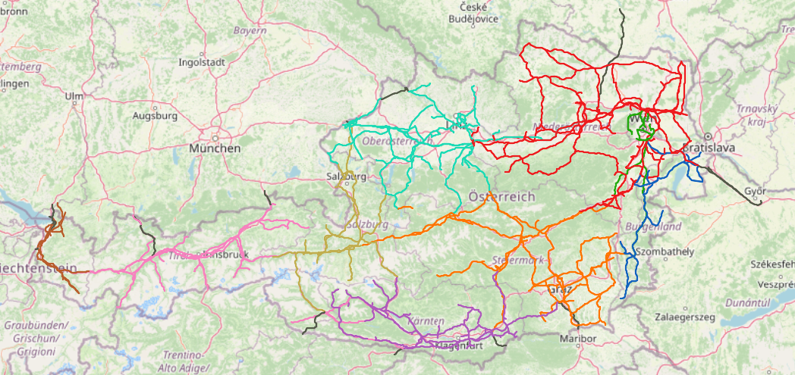

Introduction
The grid area of Austrian Power Grid forms an independent control area in the interconnected continental European electricity grid. The main switchgear is located in the 10th district of Vienna, right next to the substation Wien-Südost. The grids in Tyrol and Vorarlberg are also connected to the APG control area by means of a cooperation agreement; APG’s control area thus includes all the provinces of Austria, with the exception of a corridor in Vorarlberg, which belongs to the German control block. The cooperation was triggered by the EU’s third energy market liberalization package, which requires transmission system operators to unbundle from their parent company, a move that entails high costs for small grids. Austrian Power Grid AG is unbundled from the Verbund Group. With a route length of 3,430 km and lines running on it with a total length of 6,965 km, the transmission grid of Austrian Power Grid is of crucial importance for the Austrian electricity supply.
